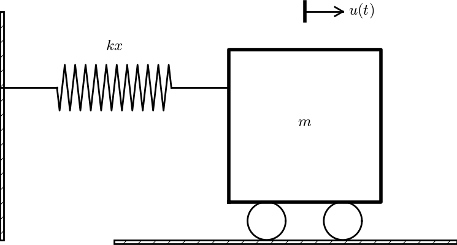

Figure 12: Damped oscillator excited by a sinusoidal function.

We shall now generalize the simple model problem from the section Finite difference discretization to include a possibly nonlinear damping term \( f(u^{\prime}) \), a possibly nonlinear spring (or restoring) force \( s(u) \), and some external excitation \( F(t) \): $$ \begin{equation} mu^{\prime\prime} + f(u^{\prime}) + s(u) = F(t),\quad u(0)=I,\ u^{\prime}(0)=V,\ t\in (0,T] \tp \tag{58} \end{equation} $$ We have also included a possibly nonzero initial value of \( u^{\prime}(0) \). The parameters \( m \), \( f(u^{\prime}) \), \( s(u) \), \( F(t) \), \( I \), \( V \), and \( T \) are input data.
There are two main types of damping (friction) forces: linear \( f(u^{\prime})=bu \), or quadratic \( f(u^{\prime})=bu^{\prime}|u^{\prime}| \). Spring systems often feature linear damping, while air resistance usually gives rise to quadratic damping. Spring forces are often linear: \( s(u)=cu \), but nonlinear versions are also common, the most famous is the gravity force on a pendulum that acts as a spring with \( s(u)\sim \sin(u) \).
Sampling (58) at a mesh point \( t_n \), replacing \( u^{\prime\prime}(t_n) \) by \( [D_tD_tu]^n \), and \( u^{\prime}(t_n) \) by \( [D_{2t}u]^n \) results in the discretization $$ \begin{equation} [mD_tD_t u + f(D_{2t}u) + s(u) = F]^n, \tag{59} \end{equation} $$ which written out means $$ \begin{equation} m\frac{u^{n+1}-2u^n + u^{n-1}}{\Delta t^2} + f(\frac{u^{n+1}-u^{n-1}}{2\Delta t}) + s(u^n) = F^n, \tag{60} \end{equation} $$ where \( F^n \) as usual means \( F(t) \) evaluated at \( t=t_n \). Solving (60) with respect to the unknown \( u^{n+1} \) gives a problem: the \( u^{n+1} \) inside the \( f \) function makes the equation nonlinear unless \( f(u^{\prime}) \) is a linear function, \( f(u^{\prime})=bu^{\prime} \). For now we shall assume that \( f \) is linear in \( u^{\prime} \). Then $$ \begin{equation} m\frac{u^{n+1}-2u^n + u^{n-1}}{\Delta t^2} + b\frac{u^{n+1}-u^{n-1}}{2\Delta t} + s(u^n) = F^n, \tag{61} \end{equation} $$ which gives an explicit formula for \( u \) at each new time level: $$ \begin{equation} u^{n+1} = (2mu^n + (\frac{b}{2}\Delta t - m)u^{n-1} + \Delta t^2(F^n - s(u^n)))(m + \frac{b}{2}\Delta t)^{-1} \tag{62} \tp \end{equation} $$
For the first time step we need to discretize \( u^{\prime}(0)=V \) as \( [D_{2t}u = V]^0 \) and combine with (62) for \( n=0 \). The discretized initial condition leads to $$ \begin{equation} u^{-1} = u^{1} - 2\Delta t V, \tag{63} \end{equation} $$ which inserted in (62) for \( n=0 \) gives an equation that can be solved for \( u^1 \): $$ \begin{equation} u^1 = u^0 + \Delta t\, V + \frac{\Delta t^2}{2m}(-bV - s(u^0) + F^0) \tp \tag{64} \end{equation} $$
When \( f(u^{\prime})=bu^{\prime}|u^{\prime}| \), we get a quadratic equation for \( u^{n+1} \) in (60). This equation can be straightforwardly solved by the well-known formula for the roots of a quadratic equation. However, we can also avoid the nonlinearity by introducing an approximation with an error of order no higher than what we already have from replacing derivatives with finite differences.
We start with (58) and only replace \( u^{\prime\prime} \) by \( D_tD_tu \), resulting in $$ \begin{equation} [mD_tD_t u + bu^{\prime}|u^{\prime}| + s(u) = F]^n\tp \tag{65} \end{equation} $$ Here, \( u^{\prime}|u^{\prime}| \) is to be computed at time \( t_n \). The idea is now to introduce a geometric mean, defined by $$ (w^2)^n \approx w^{n-\half}w^{n+\half},$$ for some quantity \( w \) depending on time. The error in the geometric mean approximation is \( \Oof{\Delta t^2} \), the same as in the approximation \( u^{\prime\prime}\approx D_tD_tu \). With \( w=u^{\prime} \) it follows that $$ [u^{\prime}|u^{\prime}|]^n \approx u^{\prime}(t_{n+\half})|u^{\prime}(t_{n-\half})|\tp$$ The next step is to approximate \( u^{\prime} \) at \( t_{n\pm 1/2} \), and fortunately a centered difference fits perfectly into the formulas since it involves \( u \) values at the mesh points only. With the approximations $$ \begin{equation} u^{\prime}(t_{n+1/2})\approx [D_t u]^{n+\half},\quad u^{\prime}(t_{n-1/2})\approx [D_t u]^{n-\half}, \tag{66} \end{equation} $$ we get $$ \begin{equation} [u^{\prime}|u^{\prime}|]^n \approx [D_tu]^{n+\half}|[D_tu]^{n-\half}| = \frac{u^{n+1}-u^n}{\Delta t} \frac{|u^n-u^{n-1}|}{\Delta t} \tp \tag{67} \end{equation} $$ The counterpart to (60) is then $$ \begin{equation} m\frac{u^{n+1}-2u^n + u^{n-1}}{\Delta t^2} + b\frac{u^{n+1}-u^n}{\Delta t}\frac{|u^n-u^{n-1}|}{\Delta t} + s(u^n) = F^n, \tag{68} \end{equation} $$ which is linear in the unknown \( u^{n+1} \). Therefore, we can easily solve (68) with respect to \( u^{n+1} \) and achieve the explicit updating formula $$ \begin{align} u^{n+1} &= \left( m + b|u^n-u^{n-1}|\right)^{-1}\times \nonumber\\ & \qquad \left(2m u^n - mu^{n-1} + bu^n|u^n-u^{n-1}| + \Delta t^2 (F^n - s(u^n)) \right) \tp \tag{69} \end{align} $$
In the derivation of a special equation for the first time step we run into some trouble: inserting (63) in (69) for \( n=0 \) results in a complicated nonlinear equation for \( u^1 \). By thinking differently about the problem we can easily get away with the nonlinearity again. We have for \( n=0 \) that \( b[u^{\prime}|u^{\prime}|]^0 = bV|V| \). Using this value in (65) gives $$ \begin{equation} [mD_tD_t u + bV|V| + s(u) = F]^0 \tp \tag{70} \end{equation} $$ Writing this equation out and using (63) results in the special equation for the first time step: $$ \begin{equation} u^1 = u^0 + \Delta t V + \frac{\Delta t^2}{2m}\left(-bV|V| - s(u^0) + F^0\right) \tp \tag{71} \end{equation} $$
The previous section first proposed to discretize the quadratic damping term \( |u^{\prime}|u^{\prime} \) using centered differences: \( [|D_{2t}|D_{2t}u]^n \). As this gives rise to a nonlinearity in \( u^{n+1} \), it was instead proposed to use a geometric mean combined with centered differences. But there are other alternatives. To get rid of the nonlinearity in \( [|D_{2t}|D_{2t}u]^n \), one can think differently: apply a backward difference to \( |u^{\prime}| \), such that the term involves known values, and apply a forward difference to \( u^{\prime} \) to make the term linear in the unknown \( u^{n+1} \). With mathematics, $$ \begin{equation} [\beta |u^{\prime}|u^{\prime}]^n \approx \beta |[D_t^-u]^n|[D_t^+ u]^n = \beta\left\vert\frac{u^n-u^{n-1}}{\Delta t}\right\vert \frac{u^{n+1}-u^n}{\Delta t}\tp \tag{72} \end{equation} $$ The forward and backward differences have both an error proportional to \( \Delta t \) so one may think the discretization above leads to a first-order scheme. However, by looking at the formulas, we realize that the forward-backward differences in (72) result in exactly the same scheme as in (68) where we used a geometric mean and centered differences and committed errors of size \( \Oof{\Delta t^2} \). Therefore, the forward-backward differences in (72) act in a symmetric way and actually produce a second-order accurate discretization of the quadratic damping term.
The algorithm arising from the methods in the sections A centered scheme for linear damping and A centered scheme for quadratic damping is very similar to the undamped case in the section A centered finite difference scheme. The difference is basically a question of different formulas for \( u^1 \) and \( u^{n+1} \). This is actually quite remarkable. The equation (58) is normally impossible to solve by pen and paper, but possible for some special choices of \( F \), \( s \), and \( f \). On the contrary, the complexity of the nonlinear generalized model (58) versus the simple undamped model is not a big deal when we solve the problem numerically!
The computational algorithm takes the form
solver function for the undamped case is fairly
easy, the big difference being many more terms and if tests on
the type of damping:
def solver(I, V, m, b, s, F, dt, T, damping='linear'):
"""
Solve m*u'' + f(u') + s(u) = F(t) for t in (0,T],
u(0)=I and u'(0)=V,
by a central finite difference method with time step dt.
If damping is 'linear', f(u')=b*u, while if damping is
'quadratic', f(u')=b*u'*abs(u').
F(t) and s(u) are Python functions.
"""
dt = float(dt); b = float(b); m = float(m) # avoid integer div.
Nt = int(round(T/dt))
u = np.zeros(Nt+1)
t = np.linspace(0, Nt*dt, Nt+1)
u[0] = I
if damping == 'linear':
u[1] = u[0] + dt*V + dt**2/(2*m)*(-b*V - s(u[0]) + F(t[0]))
elif damping == 'quadratic':
u[1] = u[0] + dt*V + \
dt**2/(2*m)*(-b*V*abs(V) - s(u[0]) + F(t[0]))
for n in range(1, Nt):
if damping == 'linear':
u[n+1] = (2*m*u[n] + (b*dt/2 - m)*u[n-1] +
dt**2*(F(t[n]) - s(u[n])))/(m + b*dt/2)
elif damping == 'quadratic':
u[n+1] = (2*m*u[n] - m*u[n-1] + b*u[n]*abs(u[n] - u[n-1])
+ dt**2*(F(t[n]) - s(u[n])))/\
(m + b*abs(u[n] - u[n-1]))
return u, t
The complete code resides in the file vib.py.
For debugging and initial verification, a constant solution is often
very useful. We choose \( \uex(t)=I \), which implies \( V=0 \).
Inserted in the ODE, we get
\( F(t)=s(I) \) for any choice of \( f \). Since the discrete derivative
of a constant vanishes (in particular, \( [D_{2t}I]^n=0 \),
\( [D_tI]^n=0 \), and \( [D_tD_t I]^n=0 \)), the constant solution also fulfills
the discrete equations. The constant should therefore be reproduced
to machine precision. The function test_constant in vib.py
implements this test.
Now we choose a linear solution: \( \uex = ct + d \). The initial condition \( u(0)=I \) implies \( d=I \), and \( u^{\prime}(0)=V \) forces \( c \) to be \( V \). Inserting \( \uex=Vt+I \) in the ODE with linear damping results in $$ 0 + bV + s(Vt+I) = F(t),$$ while quadratic damping requires the source term $$ 0 + b|V|V + s(Vt+I) = F(t)\tp$$ Since the finite difference approximations used to compute \( u^{\prime} \) all are exact for a linear function, it turns out that the linear \( \uex \) is also a solution of the discrete equations. Exercise 9: Use linear/quadratic functions for verification asks you to carry out all the details.
Choosing \( \uex = bt^2 + Vt + I \), with \( b \) arbitrary, fulfills the initial conditions and fits the ODE if \( F \) is adjusted properly. The solution also solves the discrete equations with linear damping. However, this quadratic polynomial in \( t \) does not fulfill the discrete equations in case of quadratic damping, because the geometric mean used in the approximation of this term introduces an error. Doing Exercise 9: Use linear/quadratic functions for verification will reveal the details. One can fit \( F^n \) in the discrete equations such that the quadratic polynomial is reproduced by the numerical method (to machine precision).
The functions for visualizations differ significantly from
those in the undamped case in the vib_undamped.py program because,
in the present general case, we do not have an exact solution to
include in the plots. Moreover, we have no good estimate of
the periods of the oscillations as there will be one period
determined by the system parameters, essentially the
approximate frequency \( \sqrt{s'(0)/m} \) for linear \( s \) and small damping,
and one period dictated by \( F(t) \) in case the excitation is periodic.
This is, however,
nothing that the program can depend on or make use of.
Therefore, the user has to specify \( T \) and the window width
to get a plot that moves with the graph and shows
the most recent parts of it in long time simulations.
The vib.py code
contains several functions for analyzing the time series signal
and for visualizing the solutions.
The main function is changed substantially from
the vib_undamped.py code, since we need to
specify the new data \( c \), \( s(u) \), and \( F(t) \). In addition, we must
set \( T \) and the plot window width (instead of the number of periods we
want to simulate as in vib_undamped.py). To figure out whether we
can use one plot for the whole time series or if we should follow the
most recent part of \( u \), we can use the plot_empricial_freq_and_amplitude
function's estimate of the number of local maxima. This number is now
returned from the function and used in main to decide on the
visualization technique.
def main():
import argparse
parser = argparse.ArgumentParser()
parser.add_argument('--I', type=float, default=1.0)
parser.add_argument('--V', type=float, default=0.0)
parser.add_argument('--m', type=float, default=1.0)
parser.add_argument('--c', type=float, default=0.0)
parser.add_argument('--s', type=str, default='u')
parser.add_argument('--F', type=str, default='0')
parser.add_argument('--dt', type=float, default=0.05)
parser.add_argument('--T', type=float, default=140)
parser.add_argument('--damping', type=str, default='linear')
parser.add_argument('--window_width', type=float, default=30)
parser.add_argument('--savefig', action='store_true')
a = parser.parse_args()
from scitools.std import StringFunction
s = StringFunction(a.s, independent_variable='u')
F = StringFunction(a.F, independent_variable='t')
I, V, m, c, dt, T, window_width, savefig, damping = \
a.I, a.V, a.m, a.c, a.dt, a.T, a.window_width, a.savefig, \
a.damping
u, t = solver(I, V, m, c, s, F, dt, T)
num_periods = empirical_freq_and_amplitude(u, t)
if num_periods <= 15:
figure()
visualize(u, t)
else:
visualize_front(u, t, window_width, savefig)
show()
The program vib.py contains
the above code snippets and can solve the model problem
(58). As a demo of vib.py, we consider the case
\( I=1 \), \( V=0 \), \( m=1 \), \( c=0.03 \), \( s(u)=\sin(u) \), \( F(t)=3\cos(4t) \),
\( \Delta t = 0.05 \), and \( T=140 \). The relevant command to run is
Terminal> python vib.py --s 'sin(u)' --F '3*cos(4*t)' --c 0.03
This results in a moving window following the function on the screen. Figure 12 shows a part of the time series.
Figure 12: Damped oscillator excited by a sinusoidal function.
The ideas of the Euler-Cromer method from the section The Euler-Cromer method carry over to the generalized model. We write (58) as two equations for \( u \) and \( v=u^{\prime} \). The first equation is taken as the one with \( v' \) on the left-hand side: $$ \begin{align} v' &= \frac{1}{m}(F(t)-s(u)-f(v)), \tag{73}\\ u^{\prime} &= v\tp \tag{74} \end{align} $$ The idea is to step (73) forward using a standard Forward Euler method, while we update \( u \) from (74) with a Backward Euler method, utilizing the recent, computed \( v^{n+1} \) value. In detail, $$ \begin{align} \frac{v^{n+1}-v^n}{\Delta t} &= \frac{1}{m}(F(t_n)-s(u^n)-f(v^n)), \tag{75}\\ \frac{u^{n+1}-u^n}{\Delta t} &= v^{n+1}, \tag{76} \end{align} $$ resulting in the explicit scheme $$ \begin{align} v^{n+1} &= v^n + \Delta t\frac{1}{m}(F(t_n)-s(u^n)-f(v^n)), \tag{77}\\ u^{n+1} &= u^n + \Delta t\,v^{n+1}\tp \tag{78} \end{align} $$ We immediately note one very favorable feature of this scheme: all the nonlinearities in \( s(u) \) and \( f(v) \) are evaluated at a previous time level. This makes the Euler-Cromer method easier to apply and hence much more convenient than the centered scheme for the second-order ODE (58).
The initial conditions are trivially set as $$ \begin{align} v^0 &= V, \tag{79}\\ u^0 &= I\tp \tag{80} \end{align} $$
Consider the ODE problem $$ u^{\prime\prime} + \omega^2u=f(t), \quad u(0)=I,\ u^{\prime}(0)=V,\ t\in(0,T]\tp$$ Discretize this equation according to \( [D_tD_t u + \omega^2 u = f]^n \).
a) Derive the equation for the first time step (\( u^1 \)).
b) For verification purposes, we use the method of manufactured solutions (MMS) with the choice of \( \uex(x,t)= ct+d \). Find restrictions on \( c \) and \( d \) from the initial conditions. Compute the corresponding source term \( f \) by term. Show that \( [D_tD_t t]^n=0 \) and use the fact that the \( D_tD_t \) operator is linear, \( [D_tD_t (ct+d)]^n = c[D_tD_t t]^n + [D_tD_t d]^n = 0 \), to show that \( \uex \) is also a perfect solution of the discrete equations.
c)
Use sympy to do the symbolic calculations above. Here is a
sketch of the program vib_undamped_verify_mms.py:
import sympy as sym
V, t, I, w, dt = sym.symbols('V t I w dt') # global symbols
f = None # global variable for the source term in the ODE
def ode_source_term(u):
"""Return the terms in the ODE that the source term
must balance, here u'' + w**2*u.
u is symbolic Python function of t."""
return sym.diff(u(t), t, t) + w**2*u(t)
def residual_discrete_eq(u):
"""Return the residual of the discrete eq. with u inserted."""
R = ...
return sym.simplify(R)
def residual_discrete_eq_step1(u):
"""Return the residual of the discrete eq. at the first
step with u inserted."""
R = ...
return sym.simplify(R)
def DtDt(u, dt):
"""Return 2nd-order finite difference for u_tt.
u is a symbolic Python function of t.
"""
return ...
def main(u):
"""
Given some chosen solution u (as a function of t, implemented
as a Python function), use the method of manufactured solutions
to compute the source term f, and check if u also solves
the discrete equations.
"""
print '=== Testing exact solution: %s ===' % u
print "Initial conditions u(0)=%s, u'(0)=%s:" % \
(u(t).subs(t, 0), sym.diff(u(t), t).subs(t, 0))
# Method of manufactured solution requires fitting f
global f # source term in the ODE
f = sym.simplify(ode_lhs(u))
# Residual in discrete equations (should be 0)
print 'residual step1:', residual_discrete_eq_step1(u)
print 'residual:', residual_discrete_eq(u)
def linear():
main(lambda t: V*t + I)
if __name__ == '__main__':
linear()
Fill in the various functions such that the calls in the main
function works.
d)
The purpose now is to choose a quadratic function
\( \uex = bt^2 + ct + d \) as exact solution. Extend the sympy
code above with a function quadratic for fitting f and checking
if the discrete equations are fulfilled. (The function is very similar
to linear.)
e) Will a polynomial of degree three fulfill the discrete equations?
f)
Implement a solver function for computing the numerical
solution of this problem.
g)
Write a nose test for checking that the quadratic solution
is computed to correctly (too machine precision, but the
round-off errors accumulate and increase with \( T \)) by the solver
function.
Filename: vib_undamped_verify_mms.
Consider an exact solution \( I\cos (\omega t) \) and an
approximation \( I\cos(\tilde\omega t) \).
Define the phase error as time lag between the peak \( I \)
in the exact solution and the corresponding peak in the approximation
after \( m \) periods of oscillations. Show that this phase error
is linear in \( m \).
Filename: vib_phase_error_growth.
According to (19), the numerical
frequency deviates from the exact frequency by a (dominating) amount
\( \omega^3\Delta t^2/24 >0 \). Replace the w parameter in the algorithm
in the solver function in vib_undamped.py by w*(1 -
(1./24)*w**2*dt**2 and test how this adjustment in the numerical
algorithm improves the accuracy (use \( \Delta t =0.1 \) and simulate
for 80 periods, with and without adjustment of \( \omega \)).
Filename: vib_adjust_w.
Adaptive methods for solving ODEs aim at adjusting \( \Delta t \) such
that the error is within a user-prescribed tolerance. Implement the
equation \( u^{\prime\prime}+u=0 \) in the Odespy
software. Use the example on adaptive
schemes
in [1]. Run the scheme with a very low
tolerance (say \( 10^{-14} \)) and for a long time, check the number of
time points in the solver's mesh (len(solver.t_all)), and compare
the phase error with that produced by the simple finite difference
method from the section A centered finite difference scheme with the same number of (equally
spaced) mesh points. The question is whether it pays off to use an
adaptive solver or if equally many points with a simple method gives
about the same accuracy.
Filename: vib_undamped_adaptive.
As an alternative to the derivation of (8) for
computing \( u^1 \), one can use a Taylor polynomial with three terms
for \( u^1 \):
$$ u(t_1) \approx u(0) + u^{\prime}(0)\Delta t + {\half}u^{\prime\prime}(0)\Delta t^2$$
With \( u^{\prime\prime}=-\omega^2 u \) and \( u^{\prime}(0)=0 \), show that this method also leads to
(8). Generalize the condition on \( u^{\prime}(0) \) to
be \( u^{\prime}(0)=V \) and compute \( u^1 \) in this case with both methods.
Filename: vib_first_step.
Sketch the function on a given mesh which has the highest possible
frequency. That is, this oscillatory "cos-like" function has its
maxima and minima at every two grid points. Find an expression for
the frequency of this function, and use the result to find the largest
relevant value of \( \omega\Delta t \) when \( \omega \) is the frequency
of an oscillating function and \( \Delta t \) is the mesh spacing.
Filename: vib_largest_wdt.
We introduce the error fraction
$$ E = \frac{[D_tD_t u]^n}{u^{\prime\prime}(t_n)} $$
to measure the error in the finite difference approximation \( D_tD_tu \) to
\( u^{\prime\prime} \).
Compute \( E \)
for the specific choice of a cosine/sine function of the
form \( u=\exp{(i\omega t)} \) and show that
$$ E = \left(\frac{2}{\omega\Delta t}\right)^2
\sin^2(\frac{\omega\Delta t}{2})
\tp
$$
Plot \( E \) as a function of \( p=\omega\Delta t \). The relevant
values of \( p \) are \( [0,\pi] \) (see Exercise 6: Find the minimal resolution of an oscillatory function
for why \( p>\pi \) does not make sense).
The deviation of the curve from unity visualizes the error in the
approximation. Also expand \( E \) as a Taylor polynomial in \( p \) up to
fourth degree (use, e.g., sympy).
Filename: vib_plot_fd_exp_error.
We consider the ODE problem \( u^{\prime\prime} + \omega^2u=0 \), \( u(0)=I \), \( u^{\prime}(0)=V \), for \( t\in (0,T] \). The total energy of the solution \( E(t)=\half(u^{\prime})^2 + \half\omega^2 u^2 \) should stay constant. The error in energy can be computed as explained in the section Energy considerations.
Make a nose test in a file test_error_conv.py, where code from
vib_undamped.py is imported, but the convergence_rates and
test_convergence_rates functions are copied and modified to also
incorporate computations of the error in energy and the convergence
rate of this error. The expected rate is 2.
Filename: test_error_conv.
This exercise is a generalization of Problem 1: Use linear/quadratic functions for verification to the extended model problem
(58) where the damping term is either linear or quadratic.
Solve the various subproblems and see how the results and problem
settings change with the generalized ODE in case of linear or
quadratic damping. By modifying the code from Problem 1: Use linear/quadratic functions for verification, sympy will do most
of the work required to analyze the generalized problem.
Filename: vib_verify_mms.
Write a nose test function in a separate file
that employs the exact discrete solution
(20) to verify the implementation of the
solver function in the file vib_undamped.py.
Filename: test_vib_undamped_exact_discrete_sol.
The purpose of this exercise is to perform convergence tests of the
problem (58) when \( s(u)=\omega^2u \) and \( F(t)=A\sin\phi t \).
Find the complete analytical solution to the problem in this case
(most textbooks on mechanics or ordinary differential equations list
the various elements you need to write down the exact solution).
Modify the convergence_rate function from the vib_undamped.py
program to perform experiments with the extended model. Verify that
the error is of order \( \Delta t^2 \).
Filename: vib_conv_rate.
Use the program vib_undamped_odespy.py from the section Comparison of schemes and the amplitude estimation from the
amplitudes function in the vib_undamped.py file (see the section Empirical analysis of the solution) to investigate how well famous methods for
1st-order ODEs can preserve the amplitude of \( u \) in undamped
oscillations. Test, for example, the 3rd- and 4th-order Runge-Kutta
methods (RK3, RK4), the Crank-Nicolson method (CrankNicolson),
the 2nd- and 3rd-order Adams-Bashforth methods (AdamsBashforth2,
AdamsBashforth3), and a 2nd-order Backwards scheme
(Backward2Step). The relevant governing equations are listed in
the beginning of the section Alternative schemes based on 1st-order equations.
Filename: vib_amplitude_errors.
The program vib.py
store the complete solution \( u^0,u^1,\ldots,u^{N_t} \) in memory, which is
convenient for later plotting.
Make a memory minimizing version of this program where only the last three
\( u^{n+1} \), \( u^n \), and \( u^{n-1} \) values are stored in memory.
Write each computed \( (t_{n+1}, u^{n+1}) \) pair to file.
Visualize the data in the file (a cool solution is to
read one line at a time and
plot the \( u \) value using the line-by-line plotter in the
visualize_front_ascii function - this technique makes it trivial
to visualize very long time simulations).
Filename: vib_memsave.
Reimplement the vib.py
program
using a class Problem to hold all the physical parameters of the problem,
a class Solver to hold the numerical parameters and compute the
solution, and a class Visualizer to display the solution.
Hint.
Use the ideas and examples
for an ODE model in [1].
More specifically, make a superclass Problem for holding the scalar
physical parameters of a problem and let subclasses implement the
\( s(u) \) and \( F(t) \) functions as methods.
Try to call up as much existing functionality in vib.py as possible.
Filename: vib_class.
Show that the difference \( [D_t D_tu]^n \) is equal to \( [D_t^+D_t^-u]^n \)
and \( D_t^-D_t^+u]^n \). That is, instead of applying a centered difference
twice one can alternatively apply a mixture forward and backward
differences.
Filename: vib_DtDt_fw_bw.
As an alternative to discretizing the damping terms \( \beta u^{\prime} \) and
\( \beta |u^{\prime}|u^{\prime} \) by centered differences, we may apply
backward differences:
$$
\begin{align*}
[u^{\prime}]^n &\approx [D_t^-u]^n,\\
& [|u^{\prime}|u^{\prime}]^n &\approx [|D_t^-u|D_t^-u]^n
= |[D_t^-u]^n|[D_t^-u]^n\tp
\end{align*}
$$
The advantage of the backward difference is that the damping term is
evaluated using known values \( u^n \) and \( u^{n-1} \) only.
Extend the vib.py code with a scheme based
on using backward differences in the damping terms. Add statements
to compare the original approach with centered difference and the
new idea launched in this exercise. Perform numerical experiments
to investigate how much accuracy that is lost by using the backward
differences.
Filename: vib_gen_bwdamping.
The Euler-Cromer scheme for the model problem \( u^{\prime\prime} + \omega^2 u =0 \), \( u(0)=I \), \( u^{\prime}(0)=0 \), is given in (53)-(52). Find the exact discrete solutions of this scheme and show that the solution for \( u^n \) coincides with that found in the section Analysis of the numerical scheme.
Hint. Use an "ansatz" \( u^n=I\exp{(i\tilde\omega\Delta t\,n)} \) and \( v^n=qu^n \), where \( \tilde\omega \) and \( q \) are unknown parameters. The following formula is handy: $$ \e^{i\tilde\omega\Delta t} + e^{i\tilde\omega(-\Delta t)} - 2 = 2\left(\cosh(i\tilde\omega\Delta t) -1 \right) =-4\sin^2(\frac{\tilde\omega\Delta t}{2})\tp$$
The following text derives some of the most well-known physical problems that lead to second-order ODE models of the type addressed in this document. We consider a simple spring-mass system; thereafter extended with nonlinear spring, damping, and external excitation; a spring-mass system with sliding friction; a simple and a physical (classical) pendulum; and an elastic pendulum.
Figure 13: Simple oscillating mass.

The most fundamental mechanical vibration system is depicted in Figure 13. A body with mass \( m \) is attached to a spring and can move horizontally without friction (in the wheels). The position of the body is given by the vector \( \rpos(t) = u(t)\ii \), where \( \ii \) is a unit vector in \( x \) direction. There is only one force acting on the body: a spring force \( \F_s =-ku\ii \), where \( k \) is a constant. The point \( x=0 \), where \( u=0 \), must therefore correspond to the body's position where the spring is neither extended nor compressed, so the force vanishes.
The basic physical principle that governs the motion of the body is Newton's second law of motion: \( \F=m\acc \), where \( \F \) is the sum of forces on the body, \( m \) is its mass, and \( \acc=\ddot\rpos \) is the acceleration. We use the dot for differentiation with respect to time, which is usual in mechanics. Newton's second law simplifies here to \( -\F_s=m\ddot u\ii \), which translates to $$ -ku = m\ddot u\tp$$ Two initial conditions are needed: \( u(0)=I \), \( \dot u(0)=V \). The ODE problem is normally written as $$ \begin{equation} m\ddot u + ku = 0,\quad u(0)=I,\ \dot u(0)=V\tp \tag{81} \end{equation} $$ It is not uncommon to divide by \( m \) and introduce the frequency \( \omega = \sqrt{k/m} \): $$ \begin{equation} \ddot u + \omega^2 u = 0,\quad u(0)=I,\ \dot u(0)=V\tp \tag{82} \end{equation} $$ This is the model problem in the first part of this chapter, with the small difference that we write the time derivative of \( u \) with a dot above, while we used \( u^{\prime} \) and \( u^{\prime\prime} \) in previous parts of the document.
Since only one scalar mathematical quantity, \( u(t) \), describes the complete motion, we say that the mechanical system has one degree of freedom (DOF).
For numerical simulations it is very convenient to scale (82) and thereby get rid of the problem of finding relevant values for all the parameters \( m \), \( k \), \( I \), and \( V \). Since the amplitude of the oscillations are dictated by \( I \) and \( V \) (or more precisely, \( V/\omega \)), we scale \( u \) by \( I \) (or \( V/omega \) if \( I=0 \)): $$ \bar u = \frac{u}{I},\quad \bar t = \frac{t}{t_c}\tp$$ The time scale \( t_c \) is normally chosen as the inverse period \( 2\pi/\omega \) or angular frequency \( 1/\omega \), most often as \( t_c=1/\omega \). Inserting the dimensionless quantities \( \bar u \) and \( \bar t \) in (82) results in the scaled problem $$ \frac{d^2\bar u}{d\bar t^2} + \bar u = 0,\quad \bar u(0)=1,\ \frac{\bar u}{\bar t}(0)=\beta = \frac{V}{I\omega},$$ where \( \beta \) is a dimensionless number. Any motion that starts from rest (\( V=0 \)) is free of parameters in the scaled model!
The typical physics of the system in Figure 13 can be described as follows. Initially, we displace the body to some position \( I \), say at rest (\( V=0 \)). After releasing the body, the spring, which is extended, will act with a force \( -kI\ii \) and pull the body to the left. This force causes an acceleration and therefore increases velocity. The body passes the point \( x=0 \), where \( u=0 \), and the spring will then be compressed and act with a force \( kx\ii \) against the motion and cause retardation. At some point, the motion stops and the velocity is zero, before the spring force \( kx\ii \) accelerates the body in positive direction. The result is that the body accelerates back and forth. As long as there is no friction forces to damp the motion, the oscillations will continue forever.
Figure 14: General oscillating system.

The mechanical system in Figure 13 can easily be extended to the more general system in Figure 14, where the body is attached to a spring and a dashpot, and also subject to an environmental force \( F(t)\ii \). The system has still only one degree of freedom since the body can only move back and forth parallel to the \( x \) axis. The spring force was linear, \( \F_s=-ku\ii \), in the section Oscillating mass attached to a spring, but in more general cases it can depend nonlinearly on the position. We therefore set \( \F_s=s(u)\ii \). The dashpot, which acts as a damper, results in a force \( \F_d \) that depends on the body's velocity \( \dot u \) and that always acts against the motion. The mathematical model of the force is written \( \F_d =f(\dot u)\ii \). A positive \( \dot u \) must result in a force acting in the positive \( x \) direction. Finally, we have the external environmental force \( \F_e = F(t)\ii \).
Newton's second law of motion now involves three forces: $$ F(t)\ii + f(\dot u)ii - s(u)\ii = m\ddot u \ii\tp$$ The common mathematical form of the ODE problem is $$ \begin{equation} m\ddot u + f(\dot u) + s(u) = F(t),\quad u(0)=I,\ \dot u(0)=V\tp \tag{83} \end{equation} $$ This is the generalized problem treated in the last part of the present chapter, but with prime denoting the derivative instead of the dot.
The most common models for the spring and dashpot are linear: \( f(\dot u) =b\dot u \) with a constant \( b\geq 0 \), and \( s(u)=ku \) for a constant \( k \).
A specific scaling requires specific choices of \( f \), \( s \), and \( F \). Suppose we have $$ f(\dot u) = b|\dot u|\dot u,\quad s(u)=ku,\quad F(t)=A\sin(\phi t)\tp$$ We introduce dimensionless variables as usual, \( \bar u = u/u_c \) and \( \bar t = t/t_c \). The scale \( u_c \) depends both on the initial conditions and \( F \), but as time grows, the effect of the initial conditions die out and \( F \) will drive the motion. Inserting \( \bar u \) and \( \bar t \) in the ODE gives $$ m\frac{u_c}{t_c^2}\frac{d^2\bar u}{d\bar t^2} + b\frac{u_c^2}{t_c^2}\left\vert\frac{d\bar u}{d\bar t}\right\vert \frac{d\bar u}{d\bar t} + ku_c\bar u = A\sin(\phi t_c\bar t)\tp$$ We divide by \( u_c/t_c^2 \) and demand the coefficients of the \( \bar u \) and the forcing term from \( F(t) \) to have unit coefficients. This leads to the scales $$ t_c = \sqrt{\frac{m}{k}},\quad u_c = \frac{A}{k}\tp$$ The scaled ODE becomes $$ \begin{equation} \frac{d^2\bar u}{d\bar t^2} + 2\beta\left\vert\frac{d\bar u}{d\bar t}\right\vert \frac{d\bar u}{d\bar t} + \bar u = \sin(\gamma\bar t), \tag{84} \end{equation} $$ where there are two dimensionless numbers: $$ \beta = \frac{Ab}{2mk},\quad\gamma =\phi\sqrt{\frac{m}{k}}\tp$$ The \( \beta \) number measures the size of the damping term (relative to unity) and is assumed to be small, basically because \( b \) is small. The \( \phi \) number is the ratio of the time scale of free vibrations and the time scale of the forcing. The scaled initial conditions have two other dimensionless numbers as values: $$ \bar u(0) = \frac{Ik}{A},\quad \frac{d\bar u}{d\bar t}=\frac{t_c}{u_c}V = \frac{V}{A}\sqrt{mk}\tp$$
Consider a variant of the oscillating body in the section Oscillating mass attached to a spring and Figure 13: the body rests on a flat surface, and there is sliding friction between the body and the surface. Figure 15 depicts the problem.
Figure 15: Sketch of a body sliding on a surface.

The body is attached to a spring with spring force \( -s(u)\ii \).
The friction force is proportional to the normal force on the surface,
\( -mg\jj \), and given by \( -f(\dot u)\ii \), where
$$ f(\dot u) = \left\lbrace\begin{array}{ll}
-\mu mg,& \dot u < 0,\\
\mu mg, & \dot u > 0,\\
0, & \dot u=0
\end{array}\right.$$
Here, \( \mu \) is a friction coefficient. With the signum function
$$ \mbox{sign(x)} = \left\lbrace\begin{array}{ll}
-1,& x < 0,\\
1, & x > 0,\\
0, & x=0
\end{array}\right.$$
we can simply write \( f(\dot u) = \mu mg\,\hbox{sign}(\dot u) \)
(the sign function is implemented by numpy.sign).
The equation of motion becomes $$ \begin{equation} m\ddot u + \mu mg\hbox{sign}(\dot u) + s(u) = 0,\quad u(0)=I,\ \dot u(0)=V\tp \tag{85} \end{equation} $$
A washing machine is placed on four springs with efficient dampers. If the machine contains just a few clothes, the circular motion of the machine induces a sinusoidal external force and the machine will jump up and down if the frequency of the external force is close to the natural frequency of the machine and its spring-damper system.
A classical problem in mechanics is the motion of a pendulum. We first consider a simple pendulum: a small body of mass \( m \) is attached to a massless wire and can oscillate back and forth in the gravity field. Figure 16 shows a sketch of the problem.
Figure 16: Sketch of a simple pendulum.

The motion is governed by Newton's 2nd law, so we need to find expressions for the forces and the acceleration. Three forces on the body are considered: an unknown force \( S \) from the wire, the gravity force \( mg \), and an air resistance force, \( \frac{1}{2}C_D\varrho A |v|v \), hereafter called the drag force, directed against the velocity of the body. Here, \( C_D \) is a drag coefficient, \( \varrho \) is the density of air, \( A \) is the cross section area of the body, and \( v \) is the velocity.
We introduce a coordinate system with polar coordinates and unit vectors \( \ir \) and \( \ith \) as shown in Figure 17. The position of the center of mass of the body is $$ \rpos(t) = x_0\ii + y_0\jj + L\ir,$$ where \( \ii \) and \( \jj \) are unit vectors in the corresponding Cartesian coordinate system in the \( x \) and \( y \) directions, respectively. We have that \( \ir = \cos\theta\ii +\sin\theta\jj \).
Figure 17: Forces acting on a simple pendulum.

The forces are now expressed as follows.
The velocity of the body is found from \( \rpos \): $$ \v(t) = \dot\rpos (t) = \frac{d}{d\theta}(x_0\ii + y_0\jj + L\ir)\frac{d\theta}{dt} = L\dot\theta\ith,$$ since \( \frac{d}{d\theta}\ir = \ith \). It follows that \( v=|\v|=L\dot\theta \). The acceleration is $$ \acc(t) = \dot\v(r) = \frac{d}{dt}(L\dot\theta\ith) = L\ddot\theta\ith + L\dot\theta\frac{d\ith}{d\theta}\dot\theta = = L\ddot\theta\ith - L\dot\theta^2\ir,$$ since \( \frac{d}{d\theta}\ith = -\ir \).
Newton's 2nd law of motion becomes $$ -S\ir + mg(-\sin\theta\ith + \cos\theta\ir) - \frac{1}{2}C_D\varrho AL^2|\dot\theta|\dot\theta\ith = mL\ddot\theta\dot\theta\ith - L\dot\theta^2\ir,$$ leading to two component equations $$ \begin{align} -S + mg\cos\theta &= -L\dot\theta^2, \tag{86}\\ -mg\sin\theta - \frac{1}{2}C_D\varrho AL^2|\dot\theta|\dot\theta &= mL\ddot\theta\tp \tag{87} \end{align} $$ From (86) we get an expression for \( S=mg\cos\theta + L\dot\theta^2 \), and from (87) we get a differential equation for the angle \( \theta(t) \). This latter equation is ordered as $$ \begin{equation} m\ddot\theta + + \frac{1}{2}C_D\varrho AL|\dot\theta|\dot\theta + \frac{mg}{L}\sin\theta = 0\tp \tag{88} \end{equation} $$ Two initial conditions are needed: \( \theta=\Theta \) and \( \dot\theta = \Omega \). Normally, the pendulum motion is started from rest, which means \( \Omega =0 \).
Equation (88) fits the general model used in (58) in the section Generalization: damping, nonlinear spring, and external excitation if we define \( u=\theta \), \( f(u^{\prime}) = \frac{1}{2}C_D\varrho AL|\dot\theta|\dot\theta \), \( s(u) = L^{-1}mg\sin u \), and \( F=0 \). If the body is a sphere with radius \( R \), we can take \( C_D=0.4 \) and \( A=\pi R^2 \).
The motion of a compound or physical pendulum where the wire is a rod with mass, can be modeled very similarly. The governing equation is \( I\acc = \boldsymbol{T} \) where \( I \) is the moment of inertia of the entire body about the point \( (x_0,y_0) \), and \( \boldsymbol{T} \) is the sum of moments of the forces with respect to \( (x_0,y_0) \). The vector equation reads $$ \rpos\times(-S\ir + mg(-\sin\theta\ith + \cos\theta\ir) - \frac{1}{2}C_D\varrho AL^2|\dot\theta|\dot\theta\ith) = I(L\ddot\theta\dot\theta\ith - L\dot\theta^2\ir)\tp$$ The component equation in \( \ith \) direction gives the equation of motion for \( \theta(t) \): $$ \begin{equation} I\ddot\theta + \frac{1}{2}C_D\varrho AL^3|\dot\theta|\dot\theta + mgL\sin\theta = 0\tp \tag{89} \end{equation} $$
Consider a pendulum as in Figure 16, but this time the wire is elastic. The length of the wire when it is not stretched is \( L_0 \), while \( L(t) \) is the stretched length at time \( t \) during the motion.
Stretching the elastic wire a distance \( \Delta L \) gives rise to a spring force \( k\Delta L \) in the opposite direction of the stretching. Let \( \normalvec \) be a unit normal vector along the wire from the point \( \rpos_0=(x_0,y_0) \) and in the direction of \( \ith \), see Figure 17 for definition of \( (x_0,y_0) \) and \( \ith \). Obviously, we have \( \normalvec=\ith \), but in this modeling of an elastic pendulum we do not need polar coordinates. Instead, it is more straightforward to develop the equation in Cartesian coordinates.
A mathematical expression for \( \normalvec \) is $$ \normalvec = \frac{\rpos-\rpos_0}{L(t)},$$ where \( L(t)=||\rpos-\rpos_0|| \) is the current length of the elastic wire. The position vector \( \rpos \) in Cartesian coordinates reads \( \rpos(t) = x(t)\ii + y(t)\jj \), where \( \ii \) and \( \jj \) are unit vectors in the \( x \) and \( y \) directions, respectively. It is convenient to introduce the Cartesian components \( n_x \) and \( n_y \) of the normal vector: $$ \normalvec = \frac{\rpos-\rpos_0}{L(t)} = \frac{x(t)-x_0}{L(t)}\ii + \frac{y(t)-y_0}{L(t)}\jj = n_x\ii + n_y\jj\tp$$
The stretch \( \Delta L \) in the wire is $$ \Delta t = L(t) - L_0\tp$$ The force in the wire is then \( -S\normalvec=-k\Delta L\normalvec \).
The other forces are the gravity and the air resistance, just as in Figure 17. The main difference is that we have a model for \( S \) in terms of the motion (as soon as we have expressed \( \Delta L \) by \( \rpos \)). For simplicity, we drop the air resistance term (but Exercise 22: Simulate an elastic pendulum with air resistance asks you to include it).
Newton's second law of motion applied to the body now results in $$ \begin{equation} m\ddot\rpos = -k(L-L_0)\normalvec - mg\jj \tag{90} \end{equation} $$ The two components of (90) are $$ \begin{align} \ddot x &= -\frac{k}{m}(L-L_0)n_x, \tag{91}\\ \tag{92} \\ \ddot y &= - \frac{k}{m}(L-L_0)n_y - g \tag{93}\tp \end{align} $$
Note that the derivation of the ODEs for an elastic pendulum is more straightforward than for a classical, non-elastic pendulum, since we avoid the details with polar coordinates, but instead work with Newton's second law directly in Cartesian coordinates. The reason why we can do this is that the elastic pendulum undergoes a general two-dimensional motion where all the forces are known or expressed as functions of \( x(t) \) and \( y(t) \), such that we get two ordinary differential equations. The motion of the non-elastic pendulum, on the other hand, is constrained: the body has to move along a circular path, and the force \( S \) in the wire is unknown.
The non-elastic pendulum therefore leads to a differential-algebraic equation, i.e., ODEs for \( x(t) \) and \( y(t) \) combined with an extra constraint \( (x-x_0)^2 + (y-y_0)^2 = L^2 \) ensuring that the motion takes place along a circular path. The extra constraint (equation) is compensated by an extra unknown force \( -S\normalvec \). Differential-algebraic equations are normally hard to solve, especially with pen and paper. Fortunately, for the non-elastic pendulum we can do a trick: in polar coordinates the unknown force \( S \) appears only in the radial component of Newton's second law, while the unknown degree of freedom for describing the motion, the angle \( \theta(t) \), is completely governed by the asimuthal component. This allows us to decouple the unknowns \( S \) and \( \theta \). But this is a kind of trick and not a widely applicable method. With an elastic pendulum we use straightforward reasoning with Newton's 2nd law and arrive at a standard ODE problem that (after scaling) is easy solve on a computer.
What is the initial position of the body? We imagine that first the pendulum hangs in equilibrium in its vertical position, and then it is displaced an angle \( \Theta \). The equilibrium position is governed by the ODEs with the accelerations set to zero. The \( x \) component leads to \( x(t)=x_0 \), while the \( y \) component gives $$ 0 = - \frac{k}{m}(L-L_0)n_y - g = \frac{k}{m}(L(0)-L_0) - g\quad\Rightarrow\quad L(0) = L_0 + mg/k,$$ since \( n_y=-11 \) in this position. The corresponding \( y \) value is then from \( n_y=-1 \): $$ y(t) = y_0 - L(0) = y_0 - (L_0 + mg/k)\tp$$ Let us now choose \( (x_0,y_0) \) such that the body is at the origin in the equilibrium position: $$ x_0 =0,\quad y_0 = L_0 + mg/k\tp$$
Displacing the body an angle \( \Theta \) to the right leads to the initial position $$ x(0)=(L_0+mg/k)\sin\Theta,\quad y(0)=(L_0+mg/k)(1-\cos\Theta)\tp$$ The initial velocities can be set to zero: \( x'(0)=y'(0)=0 \).
We can summarize all the equations as follows: $$ \begin{align*} \ddot x &= -\frac{k}{m}(L-L_0)n_x, \\ \ddot y &= -\frac{k}{m}(L-L_0)n_y - g, \\ L &= \sqrt{(x-x_0)^2 + (y-y_0)^2}, \\ n_x &= \frac{x-x_0}{L}, \\ n_y &= \frac{y-y_0}{L}, \\ x(0) &= (L_0+mg/k)\sin\Theta, \\ x'(0) &= 0, \\ y(0) & =(L_0+mg/k)(1-\cos\Theta), \\ y'(0) &= 0\tp \end{align*} $$ We insert \( n_x \) and \( n_y \) in the ODEs: $$ \begin{align} \ddot x &= -\frac{k}{m}\left(1 -\frac{L_0}{L}\right)(x-x_0), \tag{94}\\ \ddot y &= -\frac{k}{m}\left(1 -\frac{L_0}{L}\right)(y-y_0) - g, \tag{95}\\ L &= \sqrt{(x-x_0)^2 + (y-y_0)^2}, \tag{96}\\ x(0) &= (L_0+mg/k)\sin\Theta, \tag{97}\\ x'(0) &= 0, \tag{98}\\ y(0) & =(L_0+mg/k)(1-\cos\Theta), \tag{99}\\ y'(0) &= 0\tp \tag{100} \end{align} $$
The elastic pendulum model can be used to study both an elastic pendulum and a classic, non-elastic pendulum. The latter problem is obtained by letting \( k\rightarrow\infty \). Unfortunately, a serious problem with the ODEs (94)-(95) is that for large \( k \), we have a very large factor \( k/m \) multiplied by a very small number \( 1-L_0/L \), since for large \( k \), \( L\approx L_0 \) (very small deformations of the wire). The product is subject to significant round-off errors for many relevant physical values of the parameters. To circumvent the problem, we introduce a scaling. This will also remove physical parameters from the problem such that we end up with only one dimensionless parameter, closely related to the elasticity of the wire. Simulations can then be done by setting just this dimensionless parameter.
The characteristic length can be taken such that in equilibrium, the scaled length is unity, i.e., the characteristic length is \( L_0+mg/k \): $$ \bar x = \frac{x}{L_0+mg/k},\quad \bar y = \frac{y}{L_0+mg/k}\tp$$ We must then also work with the scaled length \( \bar L = L/(L_0+mg/k) \).
Introducing \( \bar t=t/t_c \), where \( t_c \) is a characteristic time we have to decide upon later, one gets $$ \begin{align*} \frac{d^2\bar x}{d\bar t^2} &= -t_c^2\frac{k}{m}\left(1 -\frac{L_0}{L_0+mg/k}\frac{1}{\bar L}\right)\bar x,\\ \frac{d^2\bar y}{d\bar t^2} &= -t_c^2\frac{k}{m}\left(1 -\frac{L_0}{L_0+mg/k}\frac{1}{\bar L}\right)(\bar y-1) -t_c^2\frac{g}{L_0 + mg/k},\\ \bar L &= \sqrt{\bar x^2 + (\bar y-1)^2},\\ \bar x(0) &= \sin\Theta,\\ \bar x'(0) &= 0,\\ \bar y(0) & = 1 - \cos\Theta,\\ \bar y'(0) &= 0\tp \end{align*} $$ For a non-elastic pendulum with small angles, we know that the frequency of the oscillations are \( \omega = \sqrt{L/g} \). It is therefore natural to choose a similar expression here, either the length in the equilibrium position, $$ t_c^2 = \frac{L_0+mg/k}{g}\tp$$ or simply the unstretched length, $$ t_c^2 = \frac{L_0}{g}\tp$$ These quantities are not very different (since the elastic model is valid only for quite small elongations), so we take the latter as it is the simplest one.
The ODEs become $$ \begin{align*} \frac{d^2\bar x}{d\bar t^2} &= -\frac{L_0k}{mg}\left(1 -\frac{L_0}{L_0+mg/k}\frac{1}{\bar L}\right)\bar x,\\ \frac{d^2\bar y}{d\bar t^2} &= -\frac{L_0k}{mg}\left(1 -\frac{L_0}{L_0+mg/k}\frac{1}{\bar L}\right)(\bar y-1) -\frac{L_0}{L_0 + mg/k},\\ \bar L &= \sqrt{\bar x^2 + (\bar y-1)^2}\tp \end{align*} $$ We can now identify a dimensionless number $$ \beta = \frac{L_0}{L_0 + mg/k} = \frac{1}{1+\frac{mg}{L_0k}},$$ which is the ratio of the unstretched length and the stretched length in equilibrium. The non-elastic pendulum will have \( \beta =1 \) (\( k\rightarrow\infty \)). With \( \beta \) the ODEs read $$ \begin{align} \frac{d^2\bar x}{d\bar t^2} &= -\frac{\beta}{1-\beta}\left(1- \frac{\beta}{\bar L}\right)\bar x, \tag{101}\\ \frac{d^2\bar y}{d\bar t^2} &= -\frac{\beta}{1-\beta}\left(1- \frac{\beta}{\bar L}\right)(\bar y-1) -\beta, \tag{102}\\ \bar L &= \sqrt{\bar x^2 + (\bar y-1)^2}, \tag{103}\\ \bar x(0) &= (1+\epsilon)\sin\Theta, \tag{104}\\ \frac{d\bar x}{d\bar t}(0) &= 0, \tag{105}\\ \bar y(0) &= 1 - (1+\epsilon)\cos\Theta, \tag{106}\\ \frac{d\bar y}{d\bar t}(0) &= 0, \tag{107} \end{align} $$ We have here added a parameter \( \epsilon \), which is an additional downward stretch of the wire at \( t=0 \). This parameter makes it possible to do a desired test: vertical oscillations of the pendulum. Without \( \epsilon \), starting the motion from \( (0,0) \) with zero velocity will result in \( x=y=0 \) for all times (also a good test!), but with an initial stretch so the body's position is \( (0,\epsilon) \), we will have oscillatory vertical motion with amplitude \( \epsilon \) (see Exercise 21: Simulate an elastic pendulum).
We immediately see that as \( k\rightarrow\infty \) (i.e., we obtain a non-elastic pendulum), \( \beta\rightarrow 1 \), \( \bar L\rightarrow 1 \), and we have very small values \( 1-\beta\bar L^{-1} \) divided by very small values \( 1-\beta \) in the ODEs. However, it turns out that we can set \( \beta \) very close to one and obtain a path of the body that within the visual accuracy of a plot does not show any elastic oscillations. (Should the division of very small values become a problem, one can study the limit by L'Hospital's rule: $$ \lim_{\beta\rightarrow 1}\frac{1 - \beta \bar L^{-1}}{1-\beta} = \frac{1}{\bar L},$$ and use the limit \( \bar L^{-1} \) in the ODEs for \( \beta \) values very close to 1.)
A bouncing ball is a body in free vertically fall until it impacts the ground. During the impact, some kinetic energy is lost, and a new motion upwards with reduced velocity starts. At some point the velocity close to the ground is so small that the ball is considered to be finally at rest.
The motion of the ball falling in air is governed by Newton's second law \( F=ma \), where \( a \) is the acceleration of the body, \( m \) is the mass, and \( F \) is the sum of all forces. Here, we neglect the air resistance so that gravity \( -mg \) is the only force. The height of the ball is denoted by \( h \) and \( v \) is the velocity. The relations between \( h \), \( v \), and \( a \), $$ h'(t)= v(t),\quad v'(t) = a(t),$$ combined with Newton's second law gives the ODE model $$ \begin{equation} h^{\prime\prime}(t) = -g, \tag{108} \end{equation} $$ or expressed alternatively as a system of first-order equations: $$ \begin{align} v'(t) &= -g, \tag{109} \\ h'(t) &= v(t)\tp \tag{110} \end{align} $$ These equations govern the motion as long as the ball is away from the ground by a small distance \( \epsilon_h > 0 \). When \( h < \epsilon_h \), we have two cases.
Although the term "mechanical vibrations" is used in the present document, we must mention that the same type of equations arise when modeling electric circuits. The current \( I(t) \) in a circuit with an inductor with inductance \( L \), a capacitor with capacitance \( C \), and overall resistance \( R \), is governed by $$ \begin{equation} \ddot I + \frac{R}{L}\dot I + \frac{1}{LC}I = \dot V(t), \tag{111} \end{equation} $$ where \( V(t) \) is the voltage source powering the circuit. This equation has the same form as the general model considered in Section refGeneralization: damping, nonlinear spring, and external excitation if we set \( u=I \), \( f(u^{\prime}=bu^{\prime} \) and define \( b=R/L \), \( s(u) = L^{-1}C^{-1}u \), and \( F(t)=\dot V(t) \).
We consider the scaled ODE model (84) from the section General mechanical vibrating system. After scaling, the amplitude of \( u \) will have a size about unity as time grows and the effect of the initial conditions die out due to damping. However, as \( \gamma\rightarrow 1 \), the amplitude of \( u \) increases, especially if \( \beta \) is small. This effect is called resonance. The purpose of this exercise is to explore resonance.
a)
Figure out how the solver function in vib.py can be called
for the scaled ODE (84).
b) Run \( \gamma =5, 1.5, 1.1, 1 \) for \( \beta=0.005, 0.05, 0.2 \). For each \( \beta \) value, present an image with plots of \( u(t) \) for the four \( \gamma \) values.
Filename: resonance.
Consider a sliding box on a flat surface as modeled in the section A sliding mass attached to a spring. As spring force we choose the nonlinear formula $$ s(u) = \frac{k}{\alpha}\tanh(\alpha u) = ku + \frac{1}{3}\alpha^2 ku^3 + \frac{2}{15}\alpha^4 k u^5 + \Oof{u^6}\tp$$
a) Plot \( g(u)=\alpha^{-1}\tanh(\alpha u) \) for various values of \( \alpha \). Assume \( u\in [-1,1] \).
b) Scale the equations using \( I \) as scale for \( u \) and \( m/k \) as time scale.
c) Implement the scaled model in b). Run it for some values of the dimensionless parameters.
Filename: sliding_box.
The section Bouncing ball presents a model for a bouncing ball. Choose one of the two ODE formulation, (108) or (109)-(110), and simulate the motion of a bouncing ball. Plot \( h(t) \). Think about how to plot \( v(t) \).
Hint. A naive implementation may get stuck in repeated impacts for large time step sizes. To avoid this situation, one can introduce a state variable that holds the mode of the motion: free fall, impact, or rest. Two consecutive impacts imply that the motion has stopped.
Filename: bouncing_ball.
The section Motion of an elastic pendulum describes a model for an elastic pendulum, resulting in a system of two ODEs. The purpose of this exercise is to implement the scaled model, test the software, and generalize the model.
a)
Write a function simulate
that can simulate an elastic pendulum using the scaled model.
The function should have the following arguments:
def simulate(
beta=0.9, # dimensionless parameter
Theta=30, # initial angle in degrees
epsilon=0, # initial stretch of wire
num_periods=6, # simulate for num_periods
time_steps_per_period=60, # time step resolution
plot=True, # make plots or not
):
To set the total simulation time and the time step, we
use our knowledge of the scaled, classical, non-elastic pendulum:
\( u^{\prime\prime} + u = 0 \), with solution
\( u = \Theta\cos \bar t \).
The period of these oscillations is \( P=2\pi \)
and the frequency is unity. The time
for simulation is taken as num_periods times \( P \). The time step
is set as \( P \) divided by time_steps_per_period.
The simulate function should return the arrays of
\( x \), \( y \), \( \theta \), and \( t \), where \( \theta = \tan^{-1}(x/(1-y)) \) is
the angular displacement of the elastic pendulum corresponding to the
position \( (x,y) \).
If plot is True, make a plot of \( \bar y(\bar t) \)
versus \( \bar x(\bar t) \), i.e., the physical motion
of the mass at \( (\bar x,\bar y) \). Use the equal aspect ratio on the axis
such that we get a physically correct picture of the motion. Also
make a plot of \( \theta(\bar t) \), where \( \theta \) is measured in degrees.
If \( \Theta < 10 \) degrees, add a plot that compares the solutions of
the scaled, classical, non-elastic pendulum and the elastic pendulum
(\( \theta(t) \)).
Although the mathematics here employs a bar over scaled quantities, the
code should feature plain names x for \( \bar x \), y for \( \bar y \), and
t for \( \bar t \) (rather than x_bar, etc.). These variable names make
the code easier to read and compare with the mathematics.
Hint 1.
Equal aspect ratio is set by plt.gca().set_aspect('equal') in
Matplotlib (import matplotlib.pyplot as plt)
and by plot(..., daspect=[1,1,1], daspectmode='equal')
in SciTools (import scitools.std as plt).
Hint 2.
If you want to use Odespy to solve the equations, order the ODEs
like \( \dot \bar x, \bar x, \dot\bar y,\bar y \) such that the Euler-Cromer
scheme can (also) be used (odespy.EulerCromer).
b) Write a test function for testing that \( \Theta=0 \) and \( \epsilon=0 \) gives \( x=y=0 \) for all times.
c) Write another test function for checking that the pure vertical motion of the elastic pendulum is correct. Start with simplifying the ODEs for pure vertical motion and show that \( \bar y(\bar t) \) fulfills a vibration equation with frequency \( \sqrt{\beta/(1-\beta)} \). Set up the exact solution.
Write a test function that
uses this special case to verify the simulate function. There will
be numerical approximation errors present in the results from
simulate so you have to believe in correct results and set a
(low) tolerance that corresponds to the computed maximum error.
Use a small \( \Delta t \) to obtain a small numerical approximation error.
d)
Make a function demo(beta, Theta) for simulating an elastic pendulum with a
given \( \beta \) parameter and initial angle \( \Theta \). Use 600 time steps
per period to get every accurate results, and simulate for 3 periods.
Filename: elastic_pendulum.
This is a continuation Exercise 22: Simulate an elastic pendulum with air resistance.
Air resistance on the body with mass \( m \) can be modeled by the
force \( -\frac{1}{2}\varrho C_D A|\v|\v \),
where \( C_D \) is a drag coefficient (0.2 for a sphere), \( \varrho \)
is the density of air (1.2 \( \hbox{kg }\,{\hbox{m}}^{-3} \)), \( A \) is the
cross section area (\( A=\pi R^2 \) for a sphere, where \( R \) is the radius),
and \( \v \) is the velocity of the body.
Include air resistance in the original model, scale the model,
write a function simulate_drag that is a copy of the simulate
function from Exercise 22: Simulate an elastic pendulum with air resistance, but with the
new ODEs included, and show plots of how air resistance
influences the motion.
Filename: elastic_pendulum_drag.
Test functions are challenging to construct for the problem with
air resistance. You can reuse the tests from
Exercise 22: Simulate an elastic pendulum with air resistance for simulate_drag,
but these tests does not verify the new terms arising from air
resistance.